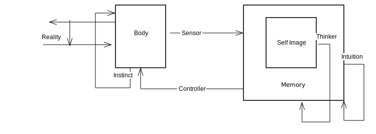

The principles shall now be explained,
Earth, water, fire and air are the principles.
By whom came this variety ? from their own nature was it born !
Perception is the only valid source of knowledge.
The body is the source of consciousness; not an imperceptible soul.
As no other world entities are seen, there is no other world.
While life is yours, live joyously !
Even freed from fear,
None can escape Death's searching eye.
-- Epicurus
1. The world is made of self-similar structures.
Atom
Star
DNA
Nature
Microbes
Plants
Animal
Man
Words
World
Each is built on top of the other. It is difficult to pin-point where
an atom ends and a star begins.
2. The human body is completely automatic.
There is no "free will" in
Growth
Sex
Sleep
Disease
3.

Various delays and feedback loops come into the picture.
Additional delays of the following are also applicable
light
sound
heat
pressure
motor control
speech
sense processing
recollection
Not only delays, memory can decay.
4. The "I" that an individual perceives is an echo.
It can't be eliminated.
5. The mind is a mirror, an imperfect one of REALITY.
6. What "is" can be divided into
Reality is the content of individual memory.
Social Reality, the least common denominator of realities.
REALITY = Sum(Reality)
What this implies in raw numbers is that, the total number of
realities at any given moment is (Individuals x Societies) + 1.
The number is obviously merely for demonstration purposes.
"Mad" people have been know to experience more than one reality at once.
7. Will is ability of an individual to hold power relations with REALITY.
Dynamics of REALITY is nothing but Will to Power.
8. As Social Reality is nothing but memory, all revolutions and revelations are just
memory experiences cruelly enforced.
For example, if `0 - 2 = 0 and 0 + 2 = 0` is valid for a number system.
Teachers won't be apologetic for the children they beat.
New teachers will certainly beat the children who give a wrong answer now.
If the earth started having regular "mini" earthquakes, no one would
be able to demonstrate "Simple Harmonic Motion".
Seen this way, there is no private memory which is a much harsher restatement of
Wittgenstein's "there is no private language".
9. Mind is a mere minder of senses.
Mind can never study itself completely.
A mirror can never look at itself by using another mirror.
Minding about the mind gives rise to infinite loops, infinite reflections.
Such infinites manifest just like a mirror as -- "Mind seeing itself everywhere".
Mind can't study any of self-similiar structures in 1 except in relation to will.
10. All that can be said of the mirror by the mirror, if the mirror had any sentience
is -- "I seem to exist. I can mirror".
11. If 10 were indeed the case, then AI is simply not possible on a human level.
12. Intelligent Robots will have a level of self-conscience a human can never have.
This means that robots will simply not pollute nature.
If one robot discovers that polluting is "bad", then all robots upgrade to do "good"
and plant more trees.
Such a robot is more beautiful than a petulant human who even after 100_000
religions, movies, songs ... changed radically.
Maybe self-aware robots are man's gift to Nature ?
13. All delusions, anxieties, obsessions, phobias, hate, love are multiplicative
feedback loops unto the Mind.
If a microphone is not insulated from the speakers, a musician will not be able
to play his guitar.
Thus therapy is avoiding too much "feedback loops" by focusing only on senses or
memory or mind but never in combination.
14. Memory as a drug is sold in the marketplace as "Becoming".
There is no "Becoming".
If two computers swap hard disks,
Have the operating miseries changed ?
15. Memory makes second order cybernetics needless.
16. Memory as time-binding is useful as long as it maps to the structure of REALITY.
17. Memory is conditioning.
Language is the condition.
Mind is conditioning moving towards pleasure.
A Perfect Mind is postulated as more pleasurable than an inferior one.
What then is pleasure ?
It is an abormal condition of the body.
It is alluded and exists only in allusion as images of content and smiling
family, peers, society, leaders, businessmen, heroes, kings,
artists, philosophers, addicts and criminals.
References
==========
* Zen and Neuroscience
* Action preceeds thought
* Radical Constructivism
* Cybernetics
* GS
* Will To Power
* Language Philosophers
tl;dr
"I" is an echo.
All memory is dogma.
The goal of the mind is doomed.
CREDITS
=======
@tuxcanfly and nix for putting up with the drafts of this !